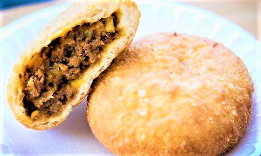
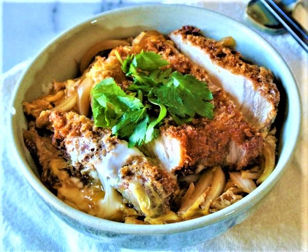
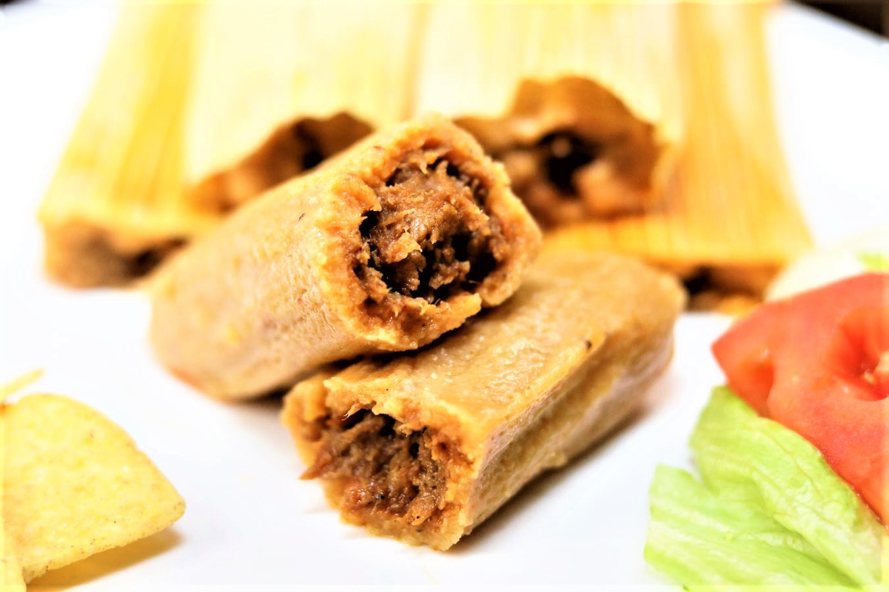
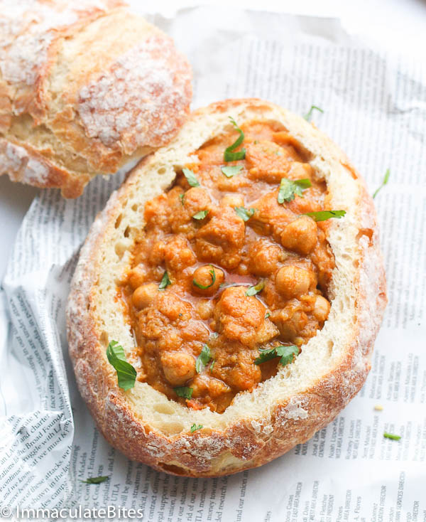
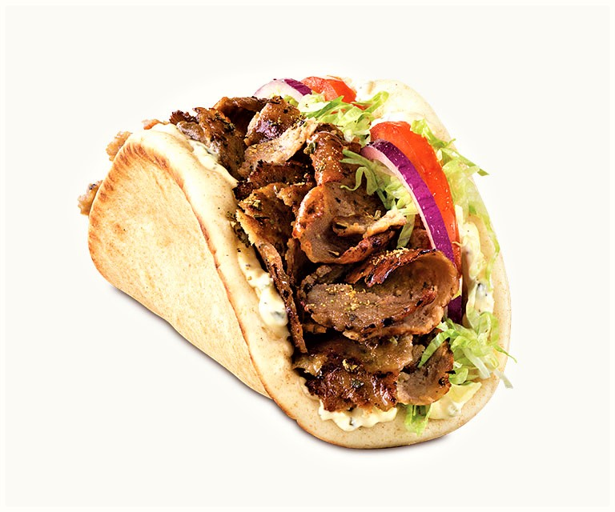

Eating 'Round the World'
Learn about foods from all around the world and how to make them
Owned by: Emily Le

Pirozhis:
puff pastry which consists of baked or fried buns stuffed with fillings like,meat, rice, onions, eggs, mushrooms and cabbage.
Orginated in Russia and Ukraine.

Kastudon:
A popular Japanese dish made up of a bowl of rice, deep fried pork cutlets,eggs, vegetables and condiments.

Tamales:
a traditional Mesoamerican dish made of masa or dough, which is steamed in a corn husk or banana leaf. Typically stuffed with meat or beans.
Fish&Chips:
a hot dish of English origin consisting of fried battered fish and hot potato chips(French Fries).

Bunny Chow:
a South African fast food dish consisting of a hollowed out loaf of bread filled with curry.

Gyro:
A Greek dish made of meat (traditionally pork, chicken, or lamb), and served wrapped in a flatbread(Pita) with tomato, onion,and tzatziki sauce,